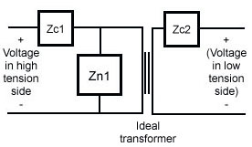
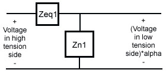
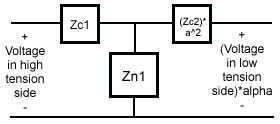
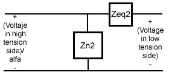
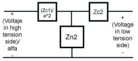

testranf()
by Roberto Pérez-Franco
Uses
Some uses of these tools are presented in the examples.
Input data
Input data in the program using request areas and dropdown menus. The input data of testranf() is the data you collect in the short circuit and open circuit tests of real transformers. This is, the magnitude of voltage |V|, current |I| and real power |P| readed by instruments in these tests. You have to input this data and specify whether they were collected in the high tension or the low tension sides of the transformer.
Output data
Receive output data from the program in two ways: the program shows it in the IO area and then stores it in variables. I solve the problems involving eficiency and voltage regulation of transformers using circuit simulation. With the answers provided by testranf() you can construct the following equivalent circuits of a real transformer, which are useful for circuit simulation. You can choose any of these arrays. The first is easy for you and hard for the calculator. The rest are a little more complex to you and much easier for the calculator. Personally, I like to use the second equivalent circuit, for its simplicity.




